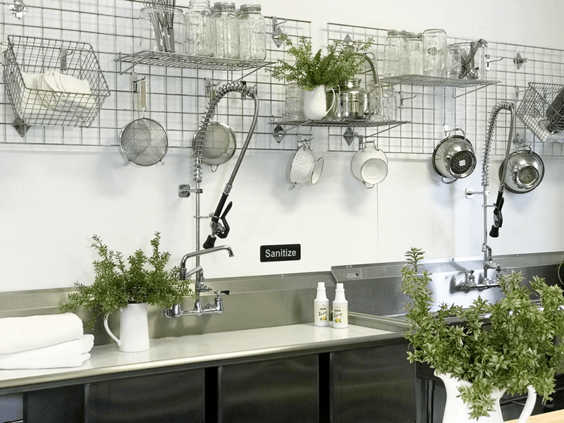
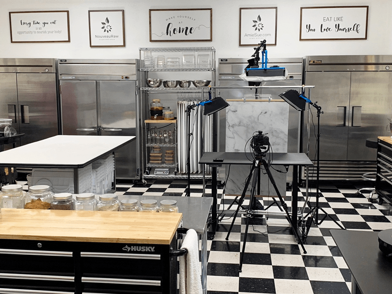
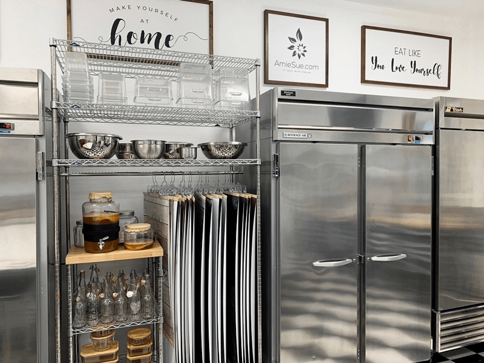
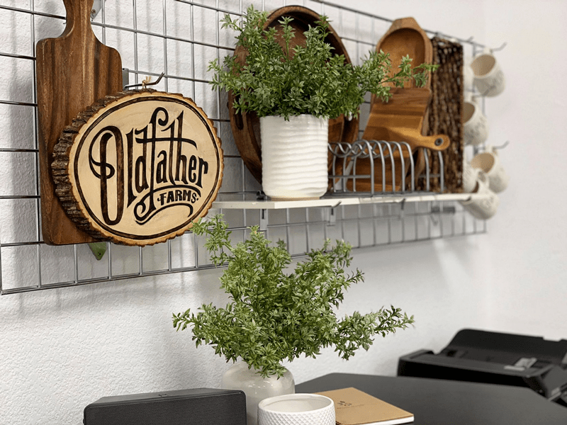

My Commercial Kitchen
My creative space is a place where my imagination comes to life, where I spend hours on end as my hands work tirelessly pouring my heart and soul into every recipe and creation. This kitchen organically unfolded as my husband and I formed a manufacturing business for raw foods. For a few years, I created and sold my raw foods in our local cafes and stores. We then began the production of Monkey Brittle which is a shelf-stable, raw, organic, gluten-free, vegan product. That was roughly five years ago.

This space was the two-car garage that we slowly transformed into what you see below. In time, we removed the garage door railing and mechanisms and built an inner wall across the garage doors. There is about a 6″ space between that wall, which is where we housed all the parts and pieces to the garage door in case we ever needed to convert it back to its original use. From the outside, it looks like a garage and a stranger wouldn’t have a clue what was taking place inside. We made other upgrades, and I will be sure to talk more about them as you scroll through the pictures.
In between productions of making the Monkey Brittle, I use this space to design and create recipes. Let me share some photos so you can get a better in-depth look at things.

Photography Station
In the photo above, you are standing in the doorway that leads from the house out into the commercial kitchen. The area is roughly 700 square feet, and I utilize every inch of it in the most effective way that I can. Straight ahead you will spot my photography station. I used to chase the sun from window to window with my raw creations in hand but not only did that cause frustration on cloudy wintery days, but I would end a trail of food, cords, and props all over the house. So, with the help of my true love, Bob, we created a photography station.
Table Work Tops
I believe in creating as much worktop space as a person can. We started with the large white table that you see in the photo. Bob built the table himself. He purchased the base and had a large slab of wood cut so he could attach to the frame of the table. The top is melamine which cleans up nicely. We also put it on large locking wheels so I can easily move it from here to there as needed.
Though you can’t see them clearly, I have two large stainless steel tables that double as a large workspace as well as storage underneath them. They don’t have wheels on them, but they have clearance underneath for easy cleaning.

Moving to the back wall, we almost have a solid row of commercial fridge and freezers. Nestled between them are my kombucha station, the storage of my photo backdrops, and extra bowls. Everything is on wheels for ease of cleaning and moving things around if needed.
The Kombucha Station
I don’t make kombucha to sell. This station is our personal continuous brewed kombucha system. It is nicely located to keep from cross contaminating with other ferments I may be working on, and the warmth of the refrigerator and freezers helps to keep it at the perfect temperature for fermenting.
Photography Backdrops
I have been tinkering with the use of backdrops for my food photos, but I always struggled with how to store them without damaging the edges. I tried all sorts of things until I landed on this design of storage. First off, I cut the backdrops to fit the tabletop that I use for my photography station. I then devised a way to hang them from clothing hangers. For the first time, they are accessible and free of damage.

This area is my “office workstation.” A sweet woman that I have come to know over the Internet had this sign handmade for us by her brother. It is such a delightful addition to this corner. The talents of this world are amazing.
In my “office station” I have a large two-door filing cabinet, and I keep my printer on top. I didn’t have a use for the filing system out in the kitchen but the size of the unit was perfect for the area. After doing a little pondering, I came up with the idea of storing my chocolate, candy, and silicone molds in the hanging folders. They used to be in binds but I always struggled with finding the exact one that I had in mind, plus they would warp out of shape.
So, the organizing began. I created a tab for each folder with a one-word description and put the folders in alphabetical order. After collecting all the molds from various places in my pantry, they finally found their home. They were no longer lost in “space” and were free from getting bent or damaged corners. It wasn’t long before I had both drawers filled up.
Storage Containers
Good grief Amie sue, that’s a LOT of cambros (storage containers). I know, and I agree, but there is a reason. Around 2011, I started doing raw food catering and teaching in Tucson. A local fresh food restaurant was going out of business, and they sold all of their equipment for pennies on the dollar. So I stocked up. The collection has grown a tad to meet the needs of our food manufacturing.
All of the bases of the containers are stored on open wire racks that are on wheels. Are you catching onto my theme here? hehe If you ever store items like this, it is best to keep them upside down to prevent dust and “things” from falling into them. The lids live in two places based on their size. The large lids are housed in a tote that you see in the left photo. The smaller lids are housed in my toolbox drawers. When everything has a tidy place to live it, it saves time and energy when it comes to finding it or when putting it away.
Before Photos
These photos are some of the “before” pictures that I took as we progressed on turning it from a garage to a kitchen. It was a nice garage but it was a garage after all. The walls needed insulation, taping, and a fresh coat of paint.
We had two tiny windows up near the ceiling that we replaced with some large, discounted windows we came across. Now I could open them on cool summer days and let in some fresh air. The floor was naturally concrete. We sealed it, wrote some inspiring words on it, and then covered it with black and white floor tiles to give it a fresh pop of style.
We also had to put in electrical outlets, new overhead task lighting, and plumbing for the sinks. I wish I had more photos to show. I may have more somewhere, but these were the ones I could dig up at the moment. That about sums up the commercial kitchen at this time. This space is always evolving so stay tuned… changes are coming down the road. :) blessings… amie sue
© AmieSue.com